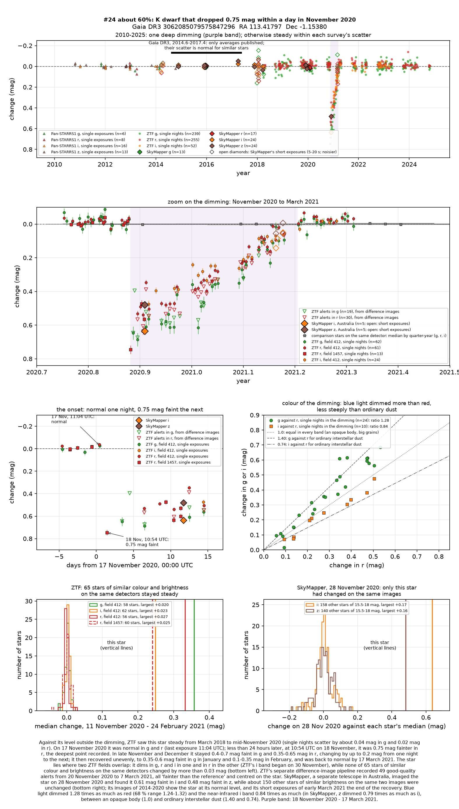
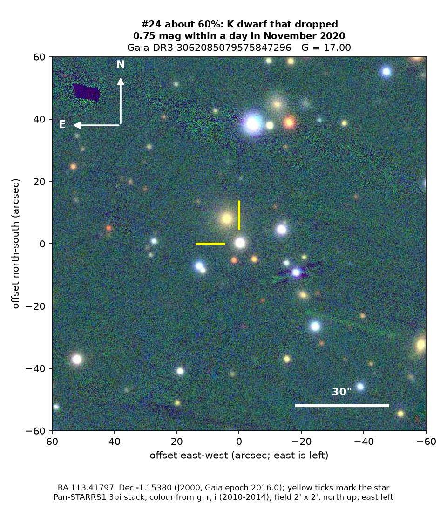
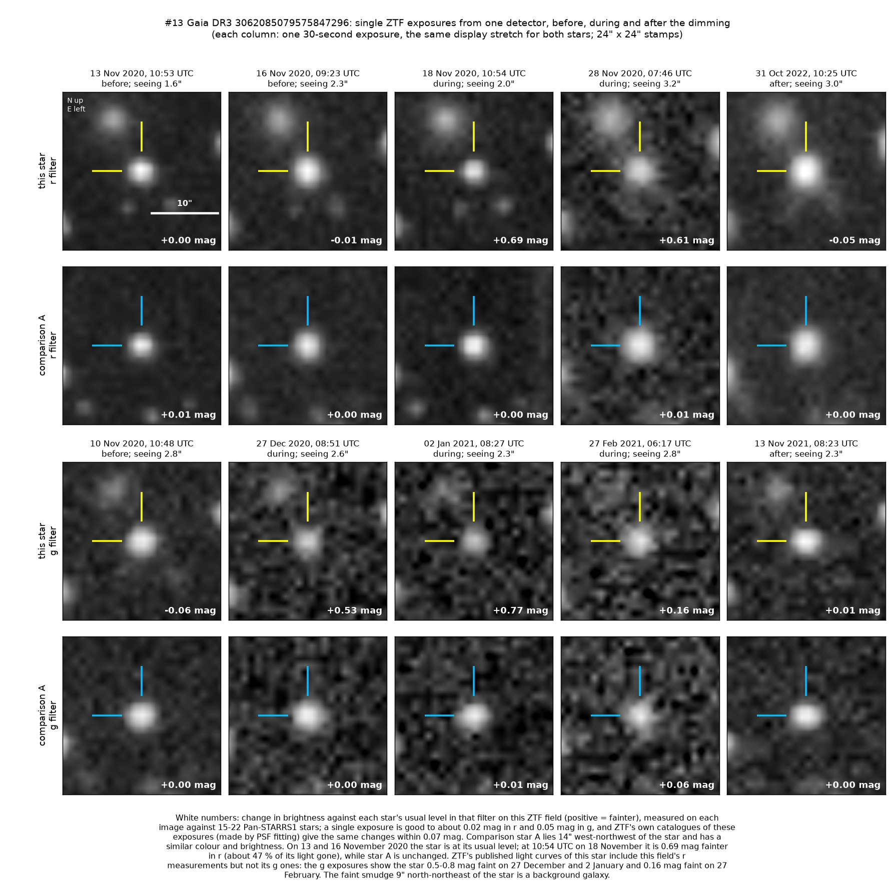

Professor of Mathematics
Paata Ivanisvili
Department of Mathematics, University of California, Irvine

Candidate 24: an orange dwarf that lost half its light within a day
Why this estimate. The dimming is certain: ZTF (the Zwicky Transient Facility, a survey telescope at Palomar Observatory in California) and SkyMapper (a telescope in Australia) both recorded it, while comparison stars stayed steady. Starspots cannot halve a star’s light within a day. The estimate is not higher because there is no spectrum, which could still reveal a young star or a companion; no infrared measurement was made during the dimming; and deep, one-off dimmings of ordinary dwarf stars are rare enough that an unrecognised kind of variability cannot be excluded.
How to read the pictures. The finder chart shows a patch of sky two arcminutes across, about a fifteenth of the Moon’s width, with north up and east to the left. The star sits between the two yellow ticks, and the white bar is 30 arcseconds long. On a light curve the vertical axis is magnitude, a brightness scale on which larger numbers mean fainter stars, and it is drawn so that down means fainter. Purple shading marks the dimming. Each survey uses slightly different filters, so each is compared with its own normal level. The ZTF pictures are single exposures taken before, during and after the dimming. In each, the star is between the yellow ticks and a steady comparison star between the blue ticks, and the white number is the change in brightness in magnitudes, positive meaning fainter.

What changed. The star is an ordinary orange (K-type) dwarf, somewhat smaller and cooler than the Sun, about 1,300 to 1,500 parsecs (4,200 to 4,900 light-years) away and steady for at least ten years. On 17 November 2020 ZTF found it normal; at 10:54 UTC on 18 November, less than 24 hours later, it was 0.7 to 0.75 magnitudes fainter in red light, having lost about half of its light. Through late November and December it stayed 0.4 to 0.7 magnitudes faint in green light, then recovered unevenly, back to normal by 17 March 2021.
It dimmed alike on two overlapping ZTF fields, and so on two detectors, while none of 65 comparison stars changed by more than 0.03 magnitudes. ZTF’s alert system, which compares each new image with a reference image, recorded 49 good-quality alerts, all fainter than the reference and centred on the star. On 28 November SkyMapper found the star 0.61 magnitudes faint in near-infrared light, while about 150 other stars on its images stayed unchanged.
Why it might matter. A cloud of dust with a sharp front edge and a long, patchy tail is the likeliest cause. Green light dimmed 1.28 times as much as red, between an opaque body (1.0) and ordinary interstellar dust (1.40), which fits dust with grains somewhat larger than usual. To cover half the star within a day, the edge must have moved at 5 to 8 km/s or more, so four months of recovery mean a structure at least 55 to 80 million km long: perhaps a cloud like a comet’s dust tail but vastly larger, or debris from a collision between planets or asteroids.
Starspots change a quiet orange dwarf’s light by only a few per cent, and this star shows no rotation; an eclipse by another star would be symmetric, the star recovering as fast as it faded. Young stars are often dimmed by their own dusty discs, but this one gives off no extra infrared light, shows no hydrogen emission and lies 200 parsecs above the Milky Way’s mid-plane, in no known cluster or young group. Two telescopes and steady comparison stars rule out an instrumental cause. A spectrum would settle the star’s type and age.
No record of the dimming could be found. SIMBAD has no entry for the star, Gaia lists no variability, VSX (the variable-star index) has nothing within 30 arcseconds, and the star is in no other variable-star catalogue consulted. No transient report, Gaia alert or paper names it, and ZTF’s alert system holds only machine-generated classifications. The star is not among the 81 dimming stars of Tzanidakis et al. (2025), although it appears to meet their selection.
- Star
- Gaia DR3 3062085079575847296, an orange K dwarf
- Location
- RA 113.41797°, Dec −1.15380° (J2000), in Monoceros, 8.9 degrees north of the Milky Way’s mid-plane
- Distance
- about 1,300 to 1,500 parsecs (4,200 to 4,900 light-years)
- Brightness
- Gaia G = 17.00, far too faint for the eye or a small telescope
- Probability
- This candidate is unconfirmed. The percentage under the title is an estimate of the chance that it is a real, previously unrecorded case of the kind described. The estimate has not been checked by outside experts. See the introduction to all fifty-eight candidates.
- Caveat
- There is no spectrum. The star is too faint for ASAS-SN, a worldwide network of small telescopes, and SkyMapper caught the dimming on one night only. WISE, NASA’s infrared space telescope, never observed during it, so warm dust near the star is untested. Gaia’s models disagree about the star’s temperature and reddening, and its distance is uncertain by about 15 per cent.

